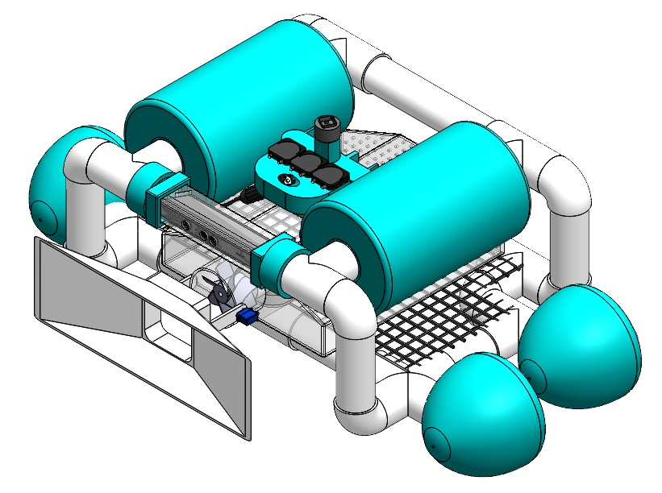
The numbers that decided it
- VisionOtsu's method on the blue channel alone, segmenting debris in 0.564 s — and a kernel-density check so it knows when there is none.
- Thrust0.110 N of drag at 0.025 m/s, run through momentum theory to four ducted propellers at 53 mm.
- Ballast+193 N of net buoyancy, cancelled by taking on 19.7 L of water across two tanks whose moments cancel too.
- Vacuum250 rad/s for a 1 m/s inflow in Flow Simulation — faster than the robot drives, or it misses the debris.
- StructureStatic FEA on every subassembly at 3.5 m depth: worst factor of safety above 1.6.
- Built and testedA 12.5 L ballast that submerged and resurfaced in 2 minutes, and a chassis that survived a bathtub.
The problem
Cleaning a pool is four chores, not one — skim the surface, vacuum the floor, chlorinate, hold the pH — and the session runs about 45 minutes at least twice a week. In 2021 I could buy a machine for any single one of them and nothing at all that did the four together, and the cleaners among them navigated at random, off bump switches and proximity sensors rather than any idea of where the dirt was.
So I costed one machine against that stack, on $625 of prototype budget. What I built came in at about $528 CAD; costed properly for production, machining and electrical safety certification included, roughly $1,521 against $2,668 for four machines that still would not talk to each other.
| What it costs | Cost (CAD) |
|---|---|
| Four single-purpose machines, combined | $2,668.80 |
| MAPSY prototype, as I built it | ~$528 |
| MAPSY, costed for production | ~$1,521 |
Seeing the debris
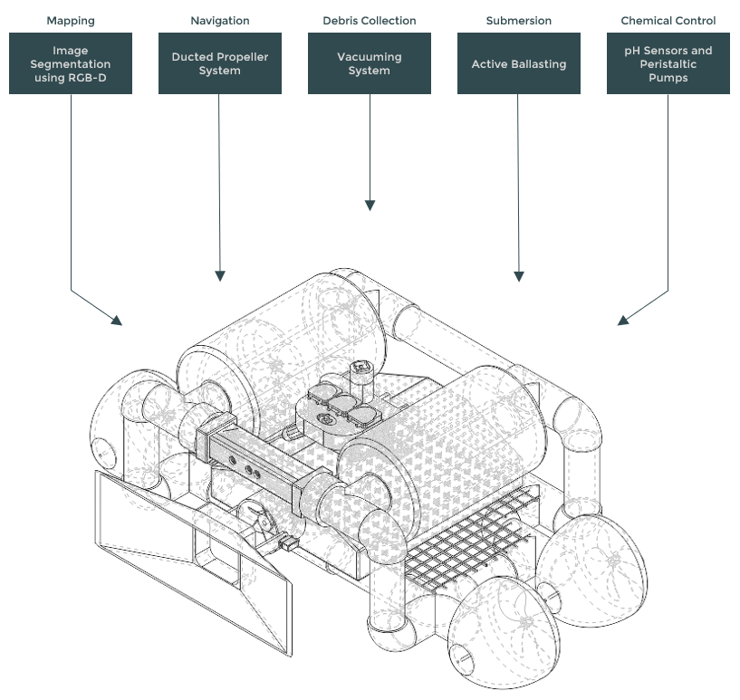
Mapping is where the real work went. Pool tiles are almost always blue, so in an image of a pool floor nearly every pixel has a very high blue-channel value and anything that does not is probably what I am looking for: I ran the vision on the blue channel alone and split that histogram into foreground and background with Otsu's method, opening and eroding first to drop the specks that constant underwater refraction throws up. A Kinect gave me colour and depth together, so a segmented piece of debris arrived with its position and its distance for free, in 0.564 seconds.
My first version had a real flaw, and I caught it myself: Otsu's method will happily threshold an image whether or not there is any debris in it, so it always found something. I fixed it by smoothing the histogram into a continuous line with a kernel density function and counting critical points on the curve — four or more meant two genuine peaks and real debris, and anything flatter than that meant a clean pool floor and no reason to chase anything.
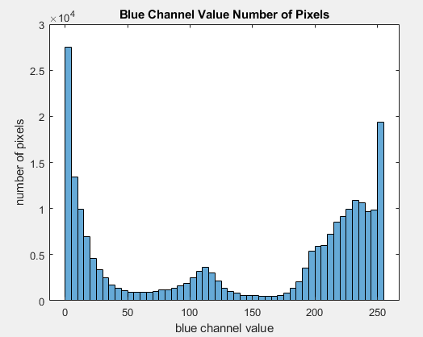
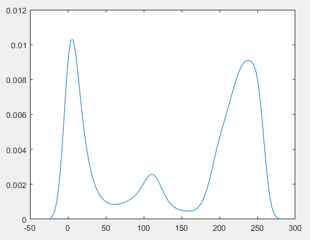
Moving, sinking, surfacing
Forward, I only had to beat drag. Taking the body as a cylinder — which overestimates the drag coefficient at 1.2, and I wanted the overestimate — a projected frontal area of 0.296 m² at 0.025 m/s works out to 0.110 N. I ran that back through simple momentum theory for a disk actuator, with the inlet speed at zero for the worst case of starting from rest, and sized the propellers at 53 mm: four of them, each in a duct, on brushless motors, kept straight by a gyro measuring the deviation from a line.
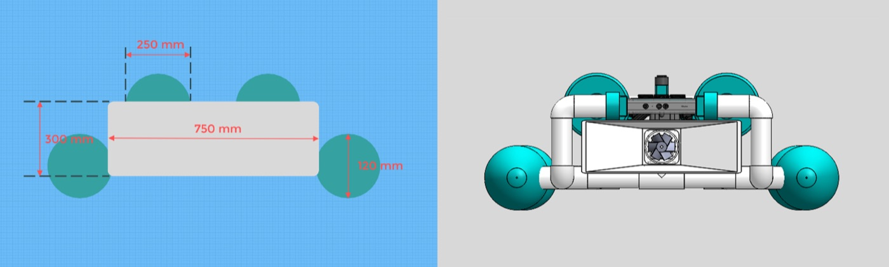
Downward was the harder half. Adding up the weight and the displaced volume of every component gave a net buoyancy of +193 N — the robot did not merely float, it floated hard — so reaching the floor meant taking on 19.7 litres of water, the volume whose weight cancels that force, and pumping it back out to resurface.
My first iteration used a single ballast and it did sink, which was the trap: one tank puts the buoyant force low and towards the rear, well away from the centre of mass, and a net moment like that on something neutrally buoyant is how a robot ends up upside down on the bottom of a pool. So I went to two, equidistant, applying equal and opposite moments — the part I still like best, because rather than calculate a centre of buoyancy and then chase it around the frame, the second tank made the calculation unnecessary.
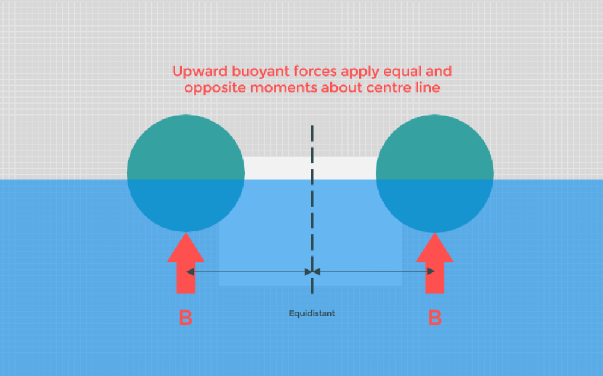
Vacuuming, and the shell around it
Two conditions had to hold for the vacuum: pressure outside the storage above pressure inside it, and an inward flow faster than the robot's own forward speed — fail the second and it drives straight past the debris it is nominally sucking at. With no prototype budget left for the vacuum I settled it in SolidWorks Flow Simulation instead, stepping the motor up until both held, which happened at 250 rad/s and a peak inflow of 1 m/s.
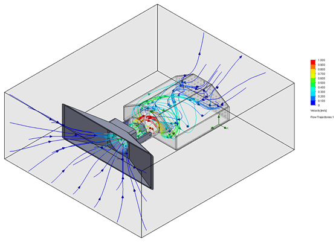
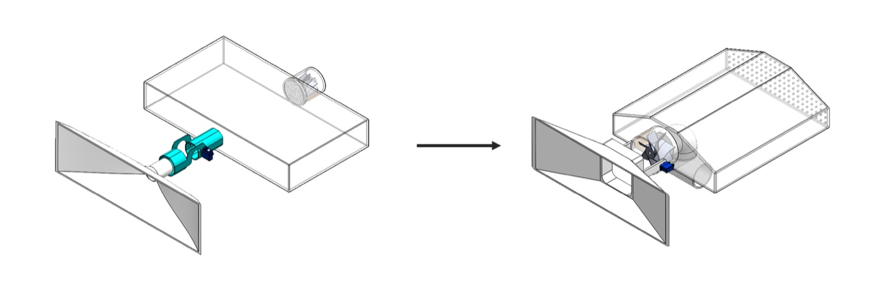
My first layout had the propeller at the back of the storage behind a protective filter, which meant every piece of debris collected landed on that filter and stayed there. Moving it to the storage entrance lets debris stack up behind the propeller and removes the filter entirely, at the cost of blades sharp enough to cut leaves through rather than wrap them.
All of it hangs off a PVC pipe network with machined housings — acrylic where something needed to see out, ABS where it needed stiffness, polypropylene for the ballasts — and a chassis failing at depth shorts out every electronic inside it. So I ran a static FEA study on every subassembly with the water pressure at 3.5 m applied to all surfaces, and the worst factor of safety that came back was greater than 1.6.
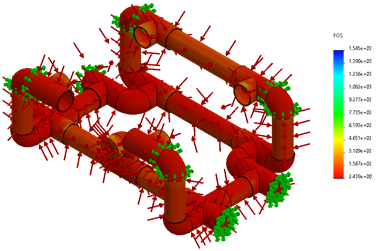
What actually got built
This is the part the renders above do not tell you: I never got to assemble the full thing. The project ran through COVID-19, the labs and the public pools were shut, and I could not get the subsystems into one room to put them together. What exists is a set of working subsystems, tested separately, at a scale that fits in a bathroom.
For the chassis I used a toolbox, drilled holes for the motor shafts, sealed them with washers and floated the whole thing in a filled bathtub to check for leaks: it did not leak, and it floated. I left the Kinect out of it on purpose — the most expensive thing in the build, too risky near a possible leak and heavy enough to upset the buoyancy. For the ballast I used an ammunition box, two mini water pumps siliconed into it, and an air-feeding tube to stop it collapsing on itself once emptied: 12.5 litres, airtight, and in a laundry sink it submerged and resurfaced in 2 minutes.
I prototyped mapping and navigation together, since one drives the other — Kinect, laptop, Arduino, two brushless motors and speed controllers — and on dry land the motors turned to face the nearest object I put in front of the camera, with MATLAB driving them directly by the end. It proved the loop worked; it did not prove it worked in a pool, and the report said so.
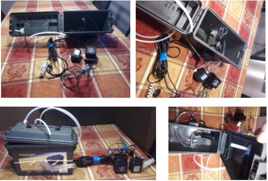
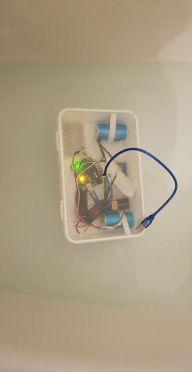
I never built the vacuum or the chemical systems at all, and I dropped both on purpose rather than for lack of time: the chemical loop is a sensor reading a value and a pump dispensing a fixed dose, which is not where the risk was, and the vacuum had been answered well enough in simulation. The honest summary is that I got the subsystems working and never got the robot — given a room and the time, those pieces bolt together.
Two things I would change. The power electronics never delivered the speed the motors were rated for, and the batteries not discharging at the right voltage is the likeliest reason — that wanted measuring properly rather than reasoning about. And segmenting on the blue channel is only as good as the assumption that pools are blue: a small neural network would not care, and it is the version I would build now.